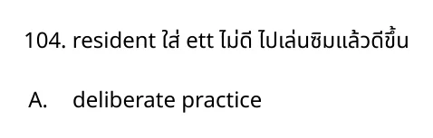
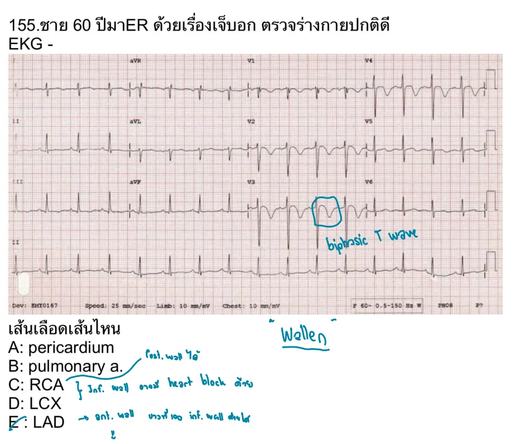
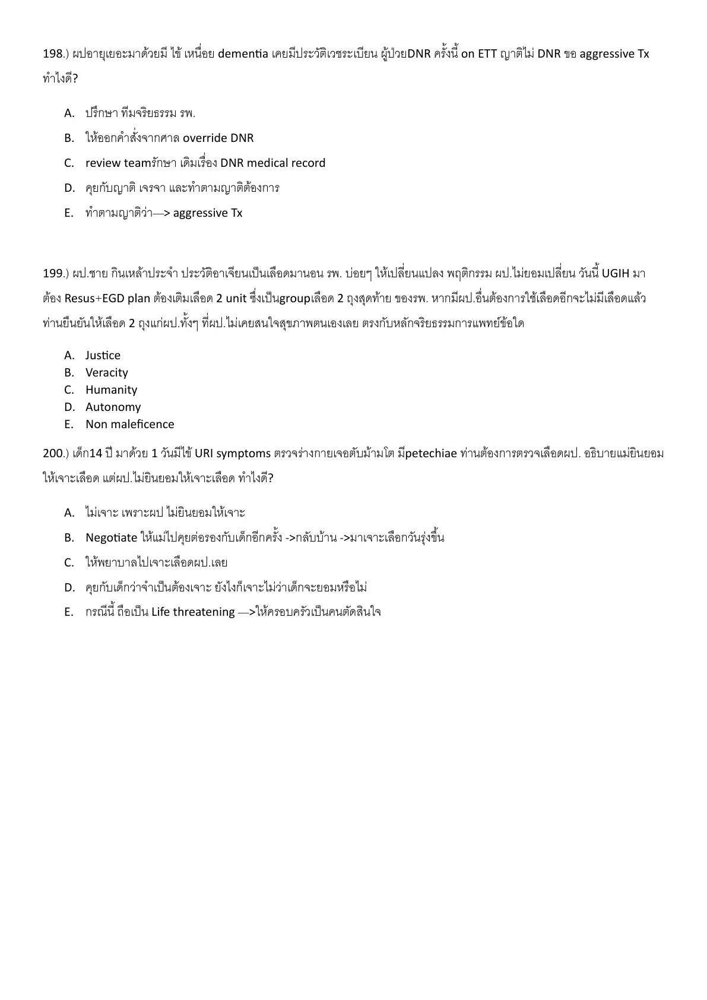

- AMA Code of Medical Ethics, Informed Consent: assess capacity and explain diagnosis, options, risks, benefits, and forgoing treatment. https://code-medical-ethics.ama-assn.org/ethics-opinions/informed-consent
E-0002E-Q0002solution_ready
ผป มีประกันสังคม ตาม พรบ ตามสิท รพ A เกิด trauma เข้า รพ B เอกชน นอน ICU 5 วัน นอน ward 2 รีเฟอกลับ รพ A สามารถเบิกค่าใช้จ่ายทางการแพทย์ได้กี่วัน
- NIEMS UCEP public information: emergency critical patients can receive care without advance payment during the first 72 hours. https://www.niems.go.th/1/News/Detail/6231?group=2
- NIEMS UCEP public information: emergency critical patients can receive care without advance payment during the first 72 hours. https://www.niems.go.th/1/News/Detail/6231?group=2
E-0004E-Q0004solution_ready
Emergency medical student tell intern for discharge male 20 yr who present with headache , the intern look at abnormal lab that overlook by resident , and then patient was send home without appropriate treatment , what the negative potential in this case
crop
ยังไม่ถูก
A.
ยังไม่ถูก
B. vatiable
ถูกต้อง
เหตุการณ์คือคนลำดับชั้นต่ำกว่าเห็นความผิดปกติ แต่ care team ยัง discharge ตาม resident/ผู้มีอำนาจเดิมจนเกิดการพลาดรักษา ปัจจัยลบหลักคือ authority gradient หรือความเกรงลำดับชั้นที่ทำให้การ speak up/ทักท้วงไม่เกิดผล.
เหตุการณ์คือคนลำดับชั้นต่ำกว่าเห็นความผิดปกติ แต่ care team ยัง discharge ตาม resident/ผู้มีอำนาจเดิมจนเกิดการพลาดรักษา ปัจจัยลบหลักคือ authority gradient หรือความเกรงลำดับชั้นที่ทำให้การ speak up/ทักท้วงไม่เกิดผล.
References
- AHRQ TeamSTEPPS: team communication and mutual support tools are designed to reduce communication failures and help team members speak up for patient safety. https://www.ahrq.gov/teamstepps-program/index.html
- AHRQ TeamSTEPPS: mutual support and speaking-up tools support patient-safety intervention when a team member detects risk. https://www.ahrq.gov/teamstepps-program/index.html
E-0006E-Q0006solution_ready
102 ผู้ชายอาการเหมือน MI เรากำลังจะดู แต่มีคนไข้ให้น้อยมานาอีกคน พยาบาลบอกตามให้ดู ญาติคนไข้คนแรกก็เร้าหรือให้เราดู ต้องใช้ communication แบบไหน
- AHRQ TeamSTEPPS: structured communication and shared mental model help teams manage competing priorities safely. https://www.ahrq.gov/teamstepps-program/index.html
- Thai Civil and Commercial Code heir-order concept: statutory heirs begin with descendants before later classes of relatives. Use local hospital/legal policy if this is applied operationally to release medical documents.
E-0010E-Q0010solution_ready
102. ผู้ชายอาการเหมือน MI เรากําลังจะดู แต่มีคนไข้เหนื่อยมากมาอีกคน พยาบาลมาตามให้ดู ญาติคนไข้ คนแรกก็เร้าหรือให้เราดู ต้องใช้ communication แบบไหน
- AHRQ TeamSTEPPS: structured communication and shared mental model help teams manage competing priorities safely. https://www.ahrq.gov/teamstepps-program/index.html
E-0011E-Q0011solution_ready
104. resident ใส่ ett ไม่ดี ไปเล่นซิมแล้วดีขึ้น

crop
ถูกต้อง
resident ทำ ETT ไม่ดี แล้วไปฝึก simulation จน performance ดีขึ้น ตรงกับ deliberate practice คือฝึกซ้ำแบบมีเป้าหมาย มี feedback และแก้จุดอ่อนเฉพาะทักษะ.
resident ทำ ETT ไม่ดี แล้วไปฝึก simulation จน performance ดีขึ้น ตรงกับ deliberate practice คือฝึกซ้ำแบบมีเป้าหมาย มี feedback และแก้จุดอ่อนเฉพาะทักษะ.
References
- AHRQ TeamSTEPPS/SBME context: simulation-based practice and feedback are common patient-safety training tools. https://www.ahrq.gov/teamstepps-program/index.html
- AMA LGBTQ-friendly practice guidance: respectful communication includes using patients' names/pronouns. https://www.ama-assn.org/delivering-care/population-care/creating-lgbtq-friendly-practice
E-0014E-Q0014solution_ready
110. คนไข้มาโวยวาย screening ว่าไม่ได้เข้าไปตรวจซักที [ให้ Situation ยาวๆดูวุ่นวายๆ] คุยเป็น EP What is your initial Mx?
- AHRQ TeamSTEPPS: situation monitoring and structured communication support safe reassessment when conditions change. https://www.ahrq.gov/teamstepps-program/index.html
E-0015E-Q0015solution_ready
113. ฉีดยา KCl ผิดคนเพราะนามสกุลเดียวกันหลังจากนั้น VF arrest > CPR+on ETT > Admit ICU 14 วัน หลังจากนั้นคนไข้full recovery ได้กลับบ้าน เป็น Med error ระดับใด 1. Level E 2. Level F 3. Level G 4. Level H 5. Level I
Medication error ทำให้เกิด VF arrest ต้อง CPR, intubation และ ICU แม้สุดท้าย full recovery จัดเป็น harm ที่ต้อง intervention เพื่อ sustain life ดังนั้นเป็น NCC MERP Category/Level H ไม่ใช่ F หรือ G.
References
- NCC MERP Medication Error Index classifies error severity by patient harm and need for life-sustaining intervention. https://www.nccmerp.org/types-medication-errors
E-0016E-Q0016solution_ready
116. อัตราค่าบริการ ให้มาเป็นตาราง ค่าใช้จ่ายในแต่ละวันของ รพ เอกชน Day1 18,000 บาท , Day 2 14,000 บาท Day 3 12,000 บาท Day 4 … บาท Day 5 … บาท ถามว่าเบิกจ่ายตามสิทธิฉุกเฉินของ UCEP ได้กี่บาท
UCEP คุ้มครองช่วงแรกไม่เกิน 72 ชั่วโมง จึงรวมค่าใช้จ่าย 3 วันแรก: Day 1 18,000 + Day 2 14,000 + Day 3 12,000 = 44,000 บาท.
References
- NIEMS UCEP public information: emergency critical patients can receive care without advance payment during the first 72 hours. https://www.niems.go.th/1/News/Detail/6231?group=2
- AMA Code of Medical Ethics, DNAR: DNAR orders direct the care team to withhold resuscitative measures according to the patient's wishes. https://code-medical-ethics.ama-assn.org/ethics-opinions/informed-consent - ThaiLivingWill / National Health Act Section 12 public resource on written intention to refuse life-prolonging treatment at end of life. https://www.thailivingwill.in.th/
E-0018E-Q0018solution_ready
155. ชาย 60 ปีมา ER ด้วยเรื่องเจ็บอก ตรวจร่างกายปกติดี EKG - เส้นเลือดเส้นไหน

crop
ยังไม่ถูก
A. pericardium
ยังไม่ถูก
B. pulmonary a.
ยังไม่ถูก
C. RCA
ยังไม่ถูก
D. LCX
ถูกต้อง
The MI source crop has the LAD option marked, and anterior-wall ischemia/infarction pattern classically localizes to the left anterior descending artery.
The MI source crop has the LAD option marked, and anterior-wall ischemia/infarction pattern classically localizes to the left anterior descending artery.
The patient is a prisoner with pain but normal objective evaluation. The key differentiator is external incentive: avoiding jail/legal consequences or gaining benefit from being ill. That makes malingering more likely than factitious disorder.
The patient is a prisoner with pain but normal objective evaluation. The key differentiator is external incentive: avoiding jail/legal consequences or gaining benefit from being ill. That makes malingering more likely than factitious disorder.
References
- Medscape Somatic Symptom and Related Disorders overview: malingering is symptom production with external incentives; factitious disorder lacks external rewards. https://emedicine.medscape.com/article/918628-overview
Severe allergic reaction after medication error requiring intubation/resuscitation is NCC MERP category H: an error that requires intervention to sustain life.
Severe allergic reaction after medication error requiring intubation/resuscitation is NCC MERP category H: an error that requires intervention to sustain life.
ICH on ETT E1M1VT แต่เจียง รพA ใกล้สุดที่ใกล้สุด เตียงเต็ม O2 หมด รพM ห่าง500เมตร มีทั้งเตียงและหมอ neuro sx แต่ลูกสาวไม่ยอมไป ทำยังไง
crop
ยังไม่ถูก
A. ให้นอนที่ รพ A กับ o2 tank รอเตียง
ยังไม่ถูก
B. ให้นอน รพ A รอติดต่อ รพ อื่น
ยังไม่ถูก
C. ไปส่ง รพM ไม่สนใจความต้องการญาติ
ถูกต้อง
The closest hospital lacks oxygen/bed capacity while the nearby hospital has neurosurgery and a bed. The safest approach is to re-explain the patient-safety reason and negotiate transfer to the appropriate facility.
D. คุยกับญาติอีกทีบอกว่าความปลอดภัยคนไข้สำคัญที่สุด
Rationale
The closest hospital lacks oxygen/bed capacity while the nearby hospital has neurosurgery and a bed. The safest approach is to re-explain the patient-safety reason and negotiate transfer to the appropriate facility.
198) ผปอายุเยอะมาด้วยมี ไข้ เหนื่อย dementia เคยมีประวัติเวชระเบียน ผู้ป่วยDNR ครั้งนี้ on ETT ญาติไม่ DNR ขอ aggressive Tx ทำไงดี?

crop
ยังไม่ถูก
A. ปรึกษา ทีมจริยธรรม รพ.
ยังไม่ถูก
B. ให้ออกคำสั่งจากศาล override DNR
ถูกต้อง
A prior documented DNR should be verified in the medical record and with the previous care team before changing goals of care based only on current family conflict.
A prior documented DNR should be verified in the medical record and with the previous care team before changing goals of care based only on current family conflict.
KCl error causing VF arrest that required CPR, intubation, and ICU care is an error requiring life-sustaining intervention, which is NCC MERP category H.
KCl error causing VF arrest that required CPR, intubation, and ICU care is an error requiring life-sustaining intervention, which is NCC MERP category H.
Q112. A 50-year-old man presents to the emergency department with shortness of breath. He is alert and oriented and hemodynamically stable. You have decided the patient has decision-making capacity. In which of the following scenarios may informed consent be waived for further evaluation and treatment?
ยังไม่ถูก
A. Chest tube insertion for a pneumothorax
ถูกต้อง
B. Isolation and treatment for active pulmonary tuberculosis in a homeless man
ยังไม่ถูก
C. Observation for serial troponin testing in a prisoner with known coronary artery disease
ยังไม่ถูก
D. Transfusion of blood for anemia in a Jehovah’s Witness
Source: Old special HTML: A09 | Page/slot: old-special | Marker: a09-mcgraw-board-review-q112
Reference: Source: Old special HTML: A09 | Page/slot: old-special | Marker: a09-mcgraw-board-review-q112
Q26. A 54-year-old law enforcement officer is rushed to the emergency department where he is noted to be unconscious, tachycardic, and hypotensive. His police unit was dispatched to a parking lot where a person was noticed to be unconscious within a vehi cle with the engine off. His squad partner waited in the car while the patient investigated the scene; the partner witnessed the patient collapse as he opened the car’s door. The partner rushed to the patient’s aid, but immediately noted a strong smell of rotten eggs. The partner managed to move the patient away from the vehicle. EMS was activated, who placed on a nonrebreather and transported him to the local emer gency department. He was decontaminated outside; interestingly, all the coins in his pocket were noted to be oxidized a deep blue-black color. Which of the following is the BEST treatment for this patient’s exposure?
McGraw Chapter 13: Toxicologic Disorders, p.178
ยังไม่ถูก
A. Hydroxocobalamin
ยังไม่ถูก
B. Hyperbaric oxygen
ถูกต้อง
Rotten-egg odor with rapid collapse and blue-black oxidation of coins points to hydrogen sulfide exposure. Severe hydrogen sulfide toxicity is treated with oxygen/supportive care; among these choices, nitrite therapy is the best match. The option is written as sodium nitrate in the source, but the intended antidotal choice is the nitrite option rather than hydroxocobalamin, hyperbaric oxygen, or thiosulfate.
ยังไม่ถูก
D. Sodium thiosulfate
Source: Old special HTML: A16 | Page/slot: old-special | Marker: a16-mcgraw-board-review-q26
Reference: Source: Old special HTML: A16 | Page/slot: old-special | Marker: a16-mcgraw-board-review-q26
ซ่อนเฉลยเปิดเฉลยSolution readyE-0026 answer
Answer
C. Sodium nitrate
Rationale
Rotten-egg odor with rapid collapse and blue-black oxidation of coins points to hydrogen sulfide exposure. Severe hydrogen sulfide toxicity is treated with oxygen/supportive care; among these choices, nitrite therapy is the best match. The option is written as sodium nitrate in the source, but the intended antidotal choice is the nitrite option rather than hydroxocobalamin, hyperbaric oxygen, or thiosulfate.
References
- Source note: Source file: McGraw Chapter 13: Toxicologic Disorders - Original reference: Reference: Source: McGraw Chapter 13: Toxicologic Disorders | p.178-184 | Answer provenance: McGraw Ch.13 Q27; answer section p.185 - ATSDR Hydrogen Sulfide Medical Management Guidelines: nitrite therapy has been suggested; sodium thiosulfate component is not necessary. https://wwwn.cdc.gov/TSP/MMG/MMGDetails.aspx?mmgid=385&toxid=67
E-0027E-Q0027solution_ready
Q11. You are working in the emergency department when a fire breaks out in a nearby large skilled nursing facility, requiring evacuation of 75 medically complex patients, some with burns and fire-related injuries, directed to your hospital. As your team is triaging and treating the large influx of patients, you realize that most of them require at least short-term admis sion until longer-term care facilities can be identified. Your hospital’s incident command system has been activated. The hospital administration is opening areas of the hospital, calling in extra staff, doubling up patients in in-patient rooms, and modifying a medical ward into an intensive care unit in order to accommodate this large number of admitted patients. This process of finding additional space and expand ing treatment capacity is known as:
McGraw Chapter 1: Prehospital Care and Disaster Management, p.12
ยังไม่ถูก
A. Alternate standards of care
ยังไม่ถูก
B. Incident command system
ถูกต้อง
Opening extra hospital areas, calling in staff, doubling rooms, and converting a ward into ICU capacity are surge actions: expanding space, staff, and treatment capacity for a sudden patient influx. Incident command is already activated in the stem; the specific process being asked is the surge plan.
ยังไม่ถูก
D. Triage plan
Source: Old special HTML: C | Page/slot: old-special | Marker: c-mcgraw-board-review-q11
Reference: Source: Old special HTML: C | Page/slot: old-special | Marker: c-mcgraw-board-review-q11
ซ่อนเฉลยเปิดเฉลยSolution readyE-0027 answer
Answer
C. Surge plan
Rationale
Opening extra hospital areas, calling in staff, doubling rooms, and converting a ward into ICU capacity are surge actions: expanding space, staff, and treatment capacity for a sudden patient influx. Incident command is already activated in the stem; the specific process being asked is the surge plan.
References
- Source note: Source file: McGraw Chapter 1: Prehospital Care and Disaster Management - Original reference: Reference: Source: McGraw Chapter 1: Prehospital Care and Disaster Management | p.12-15 | Answer provenance: McGraw Ch.1 Q11; answer section p.16
E-0028E-Q0028solution_ready
Q8. You have been asked to be the medical director for an upcoming, outdoor, rock concert that is expected to draw a crowd of over 100,000 people. Part of your responsibility includes creating a medical plan in advance of the event to submit to the city EMS agency. As you work to create this plan, you should consider a number of issues. Select the statement that is TRUE from the following options:
McGraw Chapter 1: Prehospital Care and Disaster Management, p.12
ถูกต้อง
For a planned mass gathering, the medical plan must account for environment, crowd conditions, hydration, food access, sanitation, communication, and integration with local EMS. The other choices overstate law-enforcement medical role, detach protocols from local EMS policy, or rely on personal phones for critical communication.
ยังไม่ถูก
B. Local law enforcement agencies routinely train in addressing mass casualty incidents (MCIs) and can be relied on to render medical care should an MCI occur.
ยังไม่ถูก
C. Medical treatment protocols that are authorized under your supervision are considered indepen dent of local EMS policies and protocols.
ยังไม่ถูก
D. You can expect your volunteer medical respond ers to rely on their personal cellphones to com municate between each other and the local 911 services.
Source: Old special HTML: C | Page/slot: old-special | Marker: c-mcgraw-board-review-q8
Reference: Source: Old special HTML: C | Page/slot: old-special | Marker: c-mcgraw-board-review-q8
ซ่อนเฉลยเปิดเฉลยSolution readyE-0028 answer
Answer
A. Environmental factors including changes in weather, temperature, time of day, access to food, water and toileting can all play a factor in the volume and range of medical emergencies that develop over the course of an event.
Rationale
For a planned mass gathering, the medical plan must account for environment, crowd conditions, hydration, food access, sanitation, communication, and integration with local EMS. The other choices overstate law-enforcement medical role, detach protocols from local EMS policy, or rely on personal phones for critical communication.
References
- Source note: Source file: McGraw Chapter 1: Prehospital Care and Disaster Management - Original reference: Reference: Source: McGraw Chapter 1: Prehospital Care and Disaster Management | p.12-15 | Answer provenance: McGraw Ch.1 Q8; answer section p.16
The stem describes a mass-casualty triage flow beyond simple first-pass color tagging: initial sorting into severity/color groups, coordination with receiving capacity, and reassessment/treatment adjustment after arrival. That fits SALT (Sort, Assess, Lifesaving interventions, Treatment/Transport) better than START alone, while ESI and CTAS are ED triage scales.
ยังไม่ถูก
D. SORT
ยังไม่ถูก
E. START
Source: Old special HTML: C | Page/slot: old-special | Marker: c-prehospital-transport-and-triage-q13
Reference: Source: Old special HTML: C | Page/slot: old-special | Marker: c-prehospital-transport-and-triage-q13
ซ่อนเฉลยเปิดเฉลยSolution readyE-0029 answer
Answer
C. SALT
Rationale
The stem describes a mass-casualty triage flow beyond simple first-pass color tagging: initial sorting into severity/color groups, coordination with receiving capacity, and reassessment/treatment adjustment after arrival. That fits SALT (Sort, Assess, Lifesaving interventions, Treatment/Transport) better than START alone, while ESI and CTAS are ED triage scales.
References
- Source note: Source file: MCQ 2025 รวมไม่แยกหัวข้อ.pdf | First, แบ่งคนเจ็บแยกประเภทตามความหนักเป็น 4 สี - Original reference: Reference: Source: MCQ 2025 รวมไม่แยกหัวข้อ.pdf | p.116-117 - SALT mass casualty triage is Sort, Assess, Lifesaving interventions, Treatment/Transport. https://remm.hhs.gov/radtriage.htm